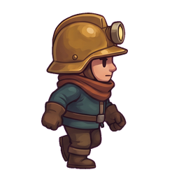
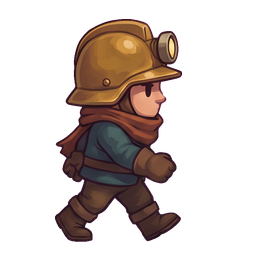
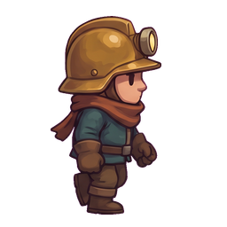
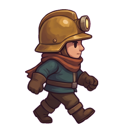
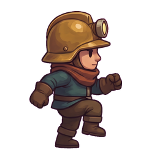
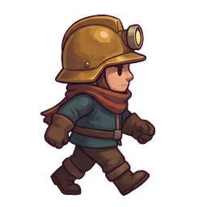
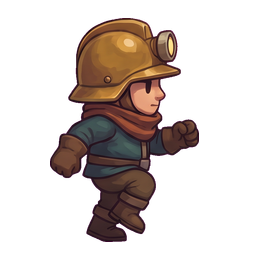

Bisheriger Miner
Kaum veränderte Bein-Silhouette; die Bewegung sitzt vor allem in den Armen.
Bestehende Spielgrafik
Die bisherigen Posen neben zwei neuen Laufproben. Alle laufen synchron mit derselben Bilddauer. Oben siehst du die Figur in 64-Pixel-Kachelgröße, darunter vergrößert. Die Hackenfolge ist die unveränderte Referenz.
Kaum veränderte Bein-Silhouette; die Bewegung sitzt vor allem in den Armen.
Wechsel zwischen weitem Stand und angewinkeltem Bein. Weniger starkes Knieheben.



Höheres Knie und größere Gesten. Gut sichtbar, möglicherweise zu marschierend.




Unveränderte Grabeposen zum Vergleich von Stil und Lesbarkeit.
Die optionale Fahrt zeigt die bisherige Spielgeschwindigkeit: 64 Pixel pro 100 ms. Die Gänge hier sind nur eine Darstellung, keine neue Spielsimulation. Links werden die neuen Entwürfe gespiegelt; Vorder- und Rückansicht werden nach der Auswahl separat entworfen.
Neue Grafiken: Runway · 20 Credits für beide Entwürfe zusammen · Projektstand 180 / 1.000 Credits. Die öffentlichen Spielgrafiken wurden nicht ersetzt. Notizen zu Käfern und Steinspender